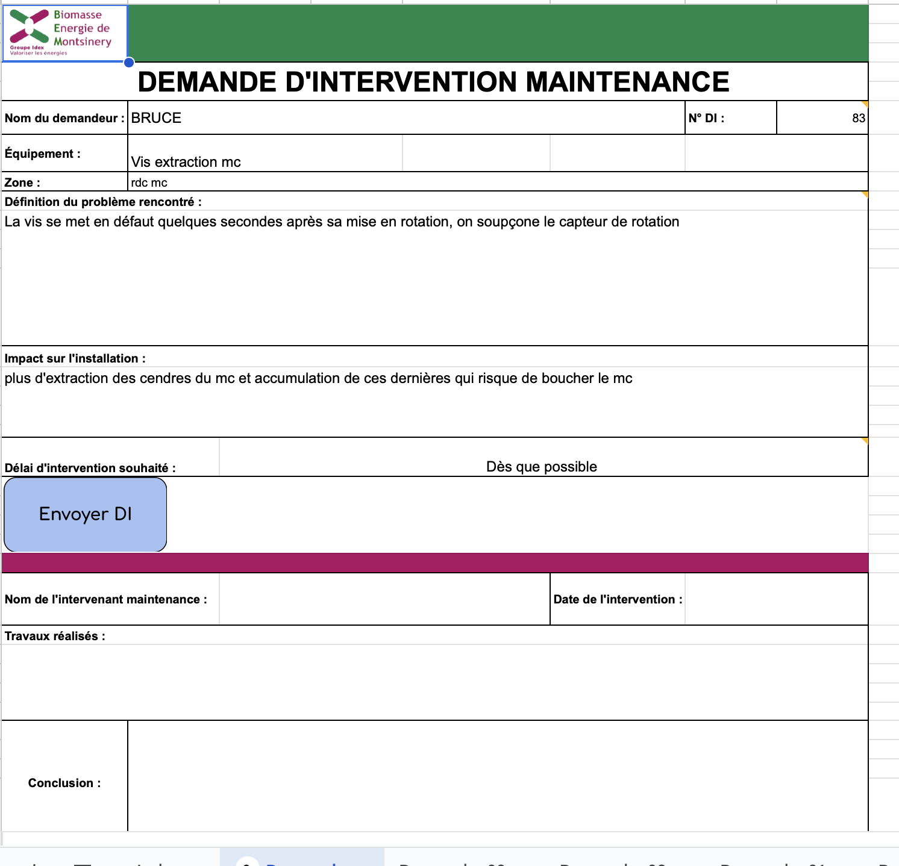
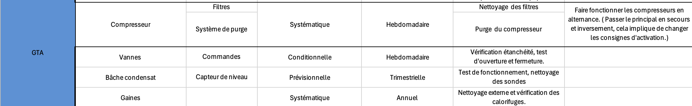
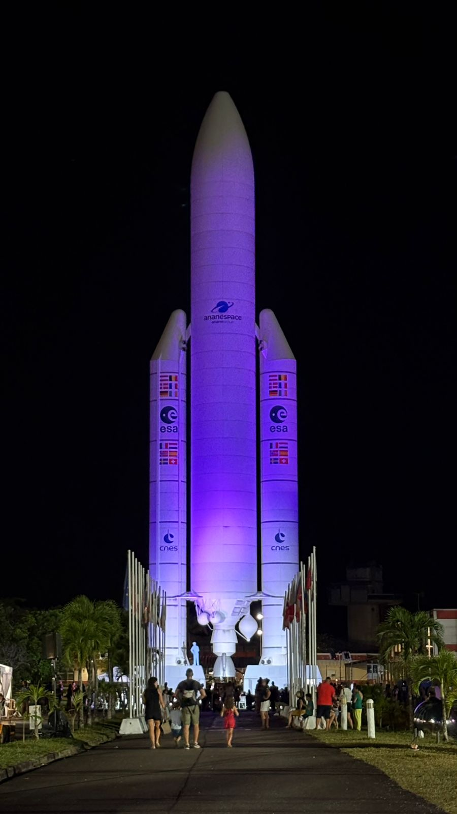
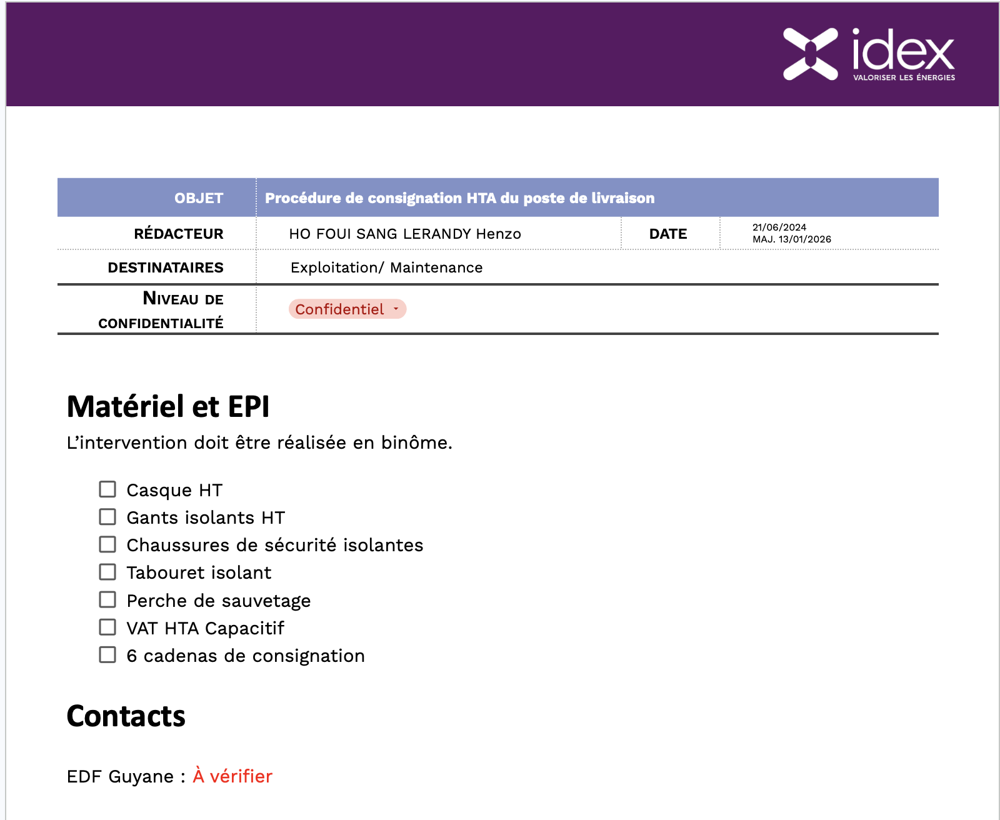
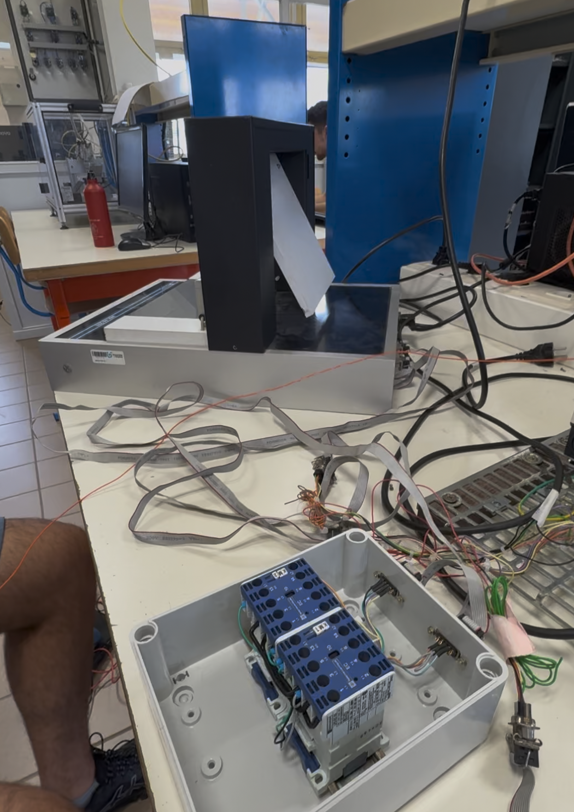
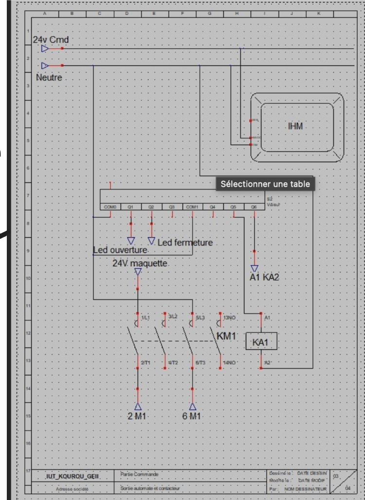
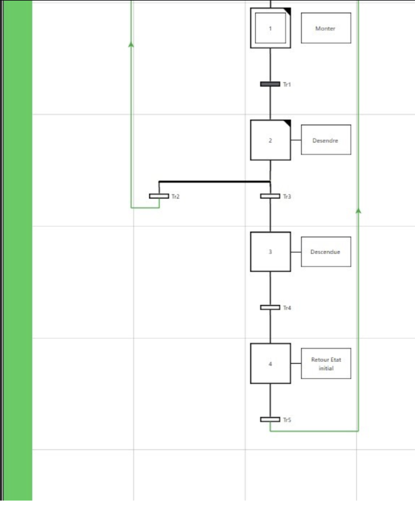
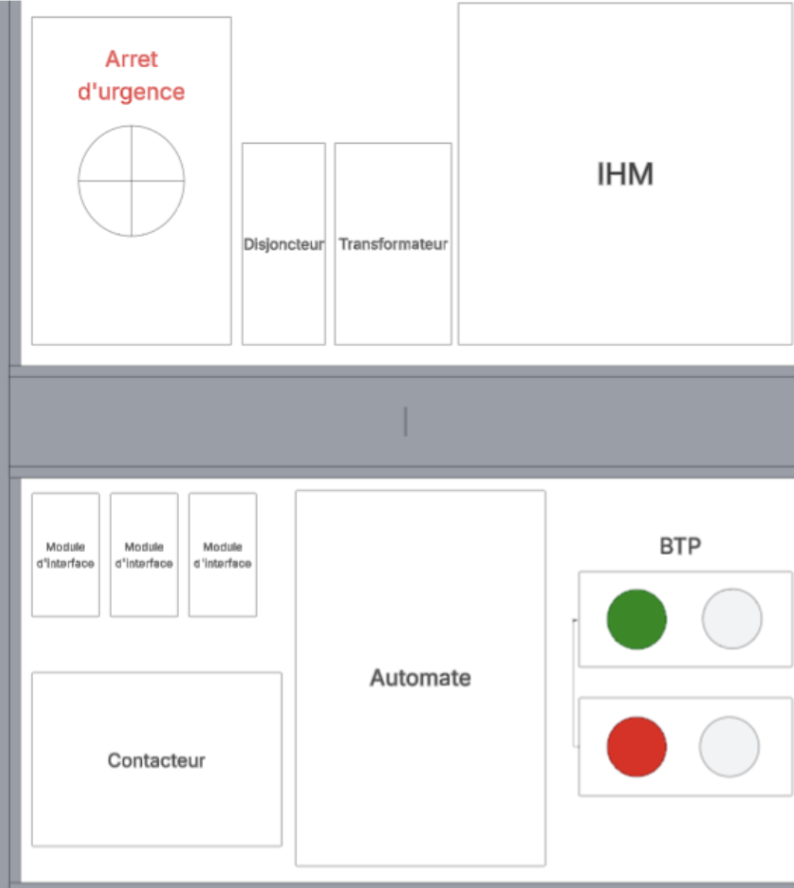
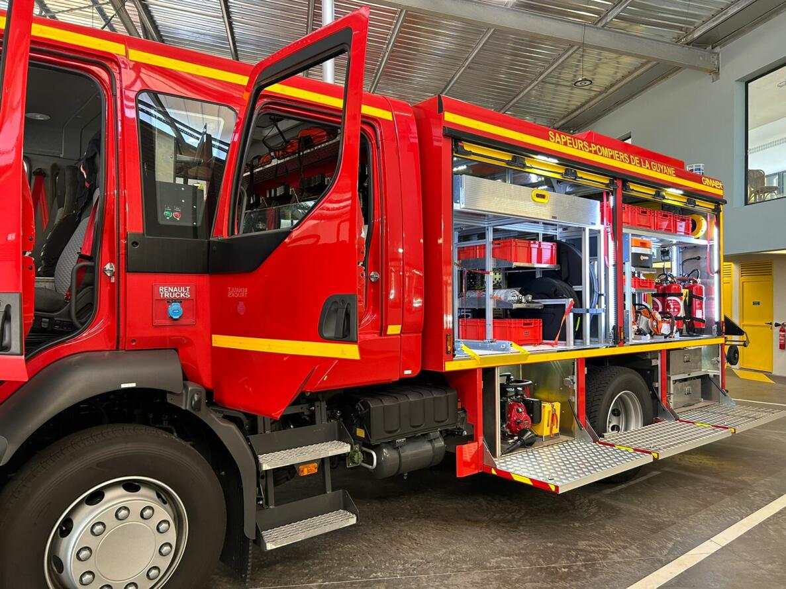

Maintenance & Exploitation
Supervision, maintenance préventive et curative de systèmes énergétiques industriels critiques.




Réaliser le tableau de suivi des maintenances d'une centrale biomasse 20 MWth / 5 MWe, classé par groupe fonctionnel, équipement, fréquence et type d'intervention. Participer aux maintenances curatives (débourrages, changements de vannes et de moteurs) et préventives (remplacement des couteaux du broyeur). Créer le fichier de demande d'interventions et son tableau de suivi pour centraliser et tracer l'ensemble des actions correctives réalisées.



Rédiger et corriger les procédures de consignation haute tension pour sécuriser les interventions sur les installations HT du CHOG. Assurer l'exploitation quotidienne des systèmes électriques et CVC : rondes terrain, relevés d'anomalies, diagnostic des défaillances et mise en place des actions correctives pour garantir la continuité de service.




Diagnostiquer la défaillance d'une maquette de portail automatisé et réaliser la maintenance curative pour remettre le système en état de marche. Programmer la séquence de mise en marche automatique en Grafcet, avec gestion des boutons de commande. Réaliser la maintenance améliorative en créant les schémas d'implantation — jusqu'alors absents — pour fiabiliser et accélérer les futures interventions.

Vérifier l'état opérationnel des équipements d'intervention avant chaque garde selon les procédures réglementaires. Maintenir la traçabilité des contrôles effectués, garantissant disponibilité et fiabilité des matériels en situation d'urgence réelle.